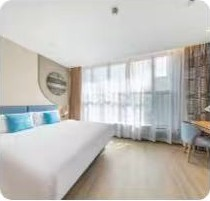

CHECK IN / 入住2026.10.01 · 14:00 后
CHECK OUT / 退房2026.10.02 · 12:00 前
- 地址
- 待补充（截图中的地址被遮挡）
- 房型
- 待补充
- 房间
- 待补充
- 入住人
- 待补充（酒店登记信息未提供）
房型、房间数量及入住人未出现在截图中。
订单取消规则
截图注明：9 月 30 日 12:00 前免费取消，之后不可取消或修改。
截图记录，实际状态以订单页面为准。
四家酒店，五晚住宿。还有两晚，在开往远方的列车上。
房型、房间数量及入住人未出现在截图中。
截图注明：9 月 30 日 12:00 前免费取消，之后不可取消或修改。
截图记录，实际状态以订单页面为准。
大床 · 30–35 m² · 房型标示可住 2 人 · 无早餐 · 可吸烟 · 免费 Wi-Fi 及有线宽带。凭姓名及身份证入住。
截图注明：会员享 10 月 3 日 20:00 前免费取消。
截图记录，实际状态以订单页面为准。
1 张 1.8 米大床 · 35 m² · 房型标示可住 2 人 · 有窗 · 2–6 层。订单提示酒店未提供接送服务。早餐信息待补充。
截图注明：订单确认后不可取消。
截图记录，实际状态以订单页面为准。

到店报住客姓名并出示证件即可入住。房型、房间数量及入住人未出现在截图中。
截图注明：10 月 6 日 18:00 前免费取消，之后不可取消或修改。
截图记录，实际状态以订单页面为准。
同行人已确认是欧雪莲与樊鑫锋；酒店登记的入住人仍需以订单为准。